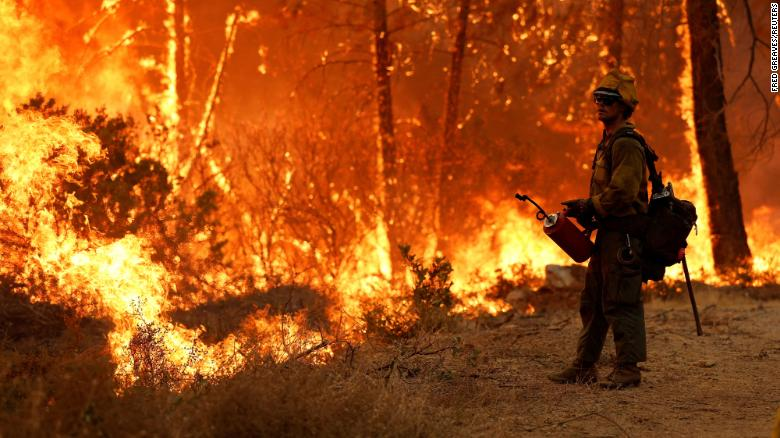

Top five news headlines of the week

- World heading into ‘uncharted territory of destruction’, says climate report - The Guardian
- Ukrainian troops keep up pressure on fleeing Russian forces - AP News
- Stocks Suffer Worst Day Since June 2020 - The Wall Street Journal
- Tenants and Critics Demand Answers as City Hall Says Test Showing Arsenic in the Water at the Jacob Riis Houses Was a ‘False Reading’ - The City
- In Hasidic Enclaves, Failing Private Schools Flush With Public Money - The New York Times